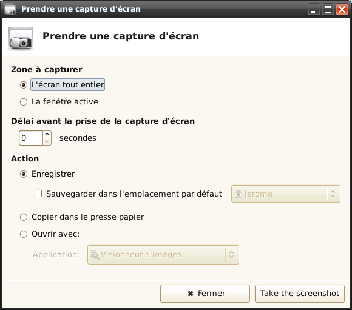

This application allows you to capture the entire screen, the active window or a selected region. You can set the delay that elapses before the screenshot is taken and the action that will be done with the screenshot: save it to a PNG file, copy it to the clipboard, or open it using another application.
A plugin for the Xfce panel is also available.
To launch the application, use the "Take a screenshot" item in the "Accessories" category of Xfce's main menu.
This window will be displayed:
The "Region to capture" section allows you to set from what the screenshot will be taken:
The "Delay before taking the screenshot" section allows you to set the delay that will elapse between pressing the Take the screenshot button and taking the screenshot. This delay will allow you to open menus or to do whatever action you want to see displayed on the screenshot.
The "Action" section allows you to choose what should be done with the screenshot. Three choices are available.
The "Save" option will save the screenshot to a PNG file. If you check the "Save by default to" checkbox, the screenshot will be saved to the folder on the right after you press the "Take the screenshot" button, without showing any save dialog. Otherwise, a save dialog will be displayed, which also shows a preview of the screenshot. You will then be able to set the save location, and the name of the file.
The "Copy to the clipboard" option allows you to paste the screenshot in another application, such as a word processor. Exiting the application before the screenshot is pasted often removes the image from the clipboard. Some clipboard managers allow you to prevent this.
The "Open with" option saves the screenshot to the system's temporary directory and opens it with the application set using the dropdown list below. Applications which support images are automatically detected and added to the dropdown list.
Command line options allow you to take screenshots quickly. They also allow you to configure the Prt Scrn key on the upper right of most keyboards so that it takes screenshots. To do so, configure the keybindings of your desktop environnement so that it launches xfce4-screenshooter with one or several of the following options when the Prt Scrn key is pressed.
The -w option allows you to take a screenshot of the active window.
The -f option allows you to take a screenshot of the entire screen.
The -r option allows you to select a region to be captured by clicking a point of the screen without releasing the mouse button, dragging your mouse to the other corner of the region, and releasing the mouse button.
The -d option followed by a positive integer allows you to set the delay before taking the screenshot when the -f, the -w or the -r option is given.
The -s option followed by the path to an existing folder allows you to set where the screenshots are saved. It only has an effect if the -f, the -w or the -r option is given. Combined with the -h option (see below), it can be used to save a file to a given path, without showing any save dialog.
If you give the -h option, the screenshot will be saved without showing any save dialog. It only has an effect if the -f, the -w or the -r option is given. The -s option allows you to set the save location if needed.
If the -o option is given, the screenshot will be saved to the system's temporary directory and opened with the application whose name is to be given after -o. It only has an effect if the -f, the -w or the -r option is given.
To add the plugin to the panel, right click on the panel and select "Add New Item". Select the plugin named "Screenshot", and add it.
You can configure how screenshots are taken by right clicking on the extension and selecting "Configure". A preferences dialog similar to the dialog of the main application will appear. Please have a look above for the different preferences.
To take a screenshot, just click on the plugin.